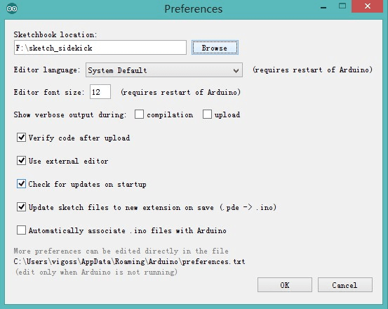
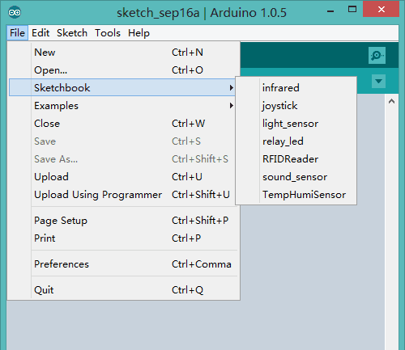

Sidekick Advanced Kit include a set of basic component as well as lots of sensor and other modules.
We had a sketchbook for chapter of Sensor. you can download it here.
When you had downloaded the code, extract it to F: folder, or anywhere you prefer to.
Then open Arduino IDE, click File -> Preferences:

Put Sketchbook location to the code you had downloaded, click OK to finish it. Reopen Arduino IDE.
Click File -> Sketchbook, then you can fine some project now, that's the demo code of this chapter.

More information about sketchbook, please refer to wiki